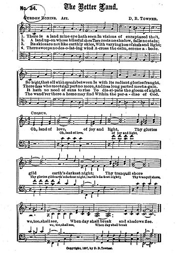

|
No ni idete 佇黎明清早 (遠藤盛子) 410 |
410 佇黎明清早 |
|
|
台語 1. 佇黎明清早， 露水滴，潤澤全地， 開始我一日； 手夯農具去做工， 徛佇草埔頂， 我虔誠對祢祈禱， 「為此日感謝。」 2. 佇炎熱日晝， 滿身汗，工課暫停， 放下我工具； 雙手合倚來感恩， 跪落佇田園， 我虔誠對祢祈禱， 「為土地感謝。」 3. 佇黃昏暗暝， 腳及手攏洗清氣， 坐桌來飲食； 親愛家族相團圓， 分享粗菜飯， 我虔誠對祢祈禱， 「為主恩感謝。」
|
|
|
|
作詞者遠藤盛子（1909 年生）於1965 年寫此詩時，正值她的丈夫 病倒在床上，家中一切事務及農田的工作均落在她身上，然而就是在這種沈重壓 力之下，促使她完成這首感人的詩（讚美歌略解II：114f）。作曲者文屋知明（1942 年生）充分發揮其精通西洋與日本音樂的技巧，模仿日本民謠獨特的風格，以re mi sol la si do 的音階配上西洋古典和聲，可謂日西文化完美的結合。
參考經文：馬太福音14:23–23 , 腓利比書4:6–6
日本人模仿西方的能力可說是未有出其右者。不少日人認為基督教是西方的 宗教，於是將德國的神學與教會音樂尊為最高的權威，故很難發展和推廣日本本 土化的教會音樂。雖然受限於這些強烈的西方傳統，但仍有少數人致力創作富日 本風味的聖詩，「佇黎明清早」即為一例。
本首歌詞生動地描述日本農民日常生活與信仰的關係，清晨為上帝所賜的一 日能去工作而感謝，中午跪在田園為土地而感恩，最後夜晚為家庭團圓與分享粗 菜飯來感謝。
作詞者遠藤盛子（1909 年生）於1965 年寫此詩時，正值她的丈夫 病倒在床上，家中一切事務及農田的工作均落在她身上，然而就是在這種沈重壓 力之下，促使她完成這首感人的詩（讚美歌略解II：114f）。作曲者文屋知明（1942 年生）充分發揮其精通西洋與日本音樂的技巧，模仿日本民謠獨特的風格，以re mi sol la si do 的音階配上西洋古典和聲，可謂日西文化完美的結合。
適用於家庭禮拜或是講論有關農民生活的議題時，或在早禱一日之始唱第一 節，中午唱第二節，晚飯前唱第三節作為謝飯歌。調名INORI NO ZA 是「祈禱 之座」的意思。我們從《日本讚美歌第二篇》（79 首）找到原文的歌詞，喜歡唱 日語者可唱之。（LIT）
新聖詩529首/ 聖詩第444首-佇我救主榮光面前
BEFORE YOUR GLORIOUS THRONE, WE STAND (In one fraternal bond of love )
長老教會的聖詩集，最早源自閩南的養心神詩，而後陸續增添與改版，在江玉玲的"聖詩歌"這本著作裡對1900年以前的歷史有很詳盡的說明。1895年中國將台灣割讓給日本後，日人來台也建立了一些教會，其中有東正教會、日本聖公會、聖潔教會、日本組合教會(公理會)、救世軍、日本美以美教會等，自然的也帶進了他們所使用的聖詩集，台灣的長老教會自此也逐步的和日本的基督教會有了連繫。隨著時間的經過，台灣和中國的連繫漸漸疏遠，再加上皇民化政策推行後，日語逐漸成為台灣的國語，在1964年版台語聖詩集中採用了5首日本聖詩的譯作。2009年版的聖詩其特色之一在於讓信徒體驗普世文化的多元性，收錄日本聖詩的原因和1964年版以前的聖詩己不相同，其中共收錄了12首日本的聖詩，1964年版的聖詩除了第88首”由木康”所寫的"救主耶降生彼冥"未收錄在2009年的聖詩中，其他的聖詩在新版聖詩都有收錄，新舊版本的日本聖詩對照如下：
|
1964年版 |
首行 |
2009年版 |
首行 |
|
88首 |
救主耶穌降生彼冥 |
|
|
|
|
|
14首 |
Phih-lih phah-lah Phih-phah叫 |
|
453首 |
天父疼咱世間眾人 |
31首 |
天父疼咱世間眾人 |
|
|
|
36首 |
對主耶穌目神 |
|
|
|
80首 |
上帝的恩惠慈悲 |
|
406首 |
細漢囝仔的朋友 |
319首 |
細漢囝仔的朋友 |
|
|
|
410首 |
佇黎明清早 |
|
230首 |
懇求至尊的天父 |
458首 |
懇求至尊的天父 |
|
|
|
480首 |
世界屬主的朋友 |
|
444首 |
佇我救主榮光面前 |
529首 |
佇我救主榮光面前 |
|
|
|
577首 |
請來欣賞山野芳花 |
|
|
|
599首 |
無論佇甚麼時陣 |
|
|
|
636首 |
加利利清靜湖邊 |
新聖詩529首(舊詩444首)的歌詞是譯自日本19世紀的聖詩集Shinsen Sanbika MS, c 1896，也就是明治年間出版的"新撰讚美歌"，其中第454首的"わが主の御前に"。新撰讚美詩指的就是新選讚美詩，也就是舊版"讚美詩"的新版。
而這首歌最早其實是出現在明治14年1881年所出版的"讚美歌" Sanbika 第237首，原曲首行為キリストのまえに(在基督的面前)，當時所用的曲調為BARNBY，譜例如下。
到了1903年發行的新撰讚美詩才配上唐納(DANIEL BRINK TOWNER)作曲的TOWNER這個曲調 。而TOWNER這個調也就是舊詩中444首的B調，最早是收錄在1901年由TOWNER出版的Hymns of Faith and Praise『信仰和讚美詩歌集』，做為羅賓斯( Gurdon Robins)所寫描述天堂美景的詩歌"The Better Land"的曲調。我們的聖詩在作詞者後標示著1896年，當時應該尚未使用TONWER這個曲調，只是將原來讚美歌中的歌詞"キリストのまえに"修改為"わが主の御前に"。
唐納1850年出生於美國賓州，小時候由父親J. G. TOWNER啟蒙，後又跟隨著名的教會音樂家羅特(John Howard, George F. Root) 和韋布(George J. Webb)學習音樂，曾在紐約、辛辛那提、肯塔基等地的衛理公會擔任詩班指揮。由於他出色的男高音以及在指揮方面的長才，1885年受到佈道家慕迪的邀請進入慕迪的佈道團隊工作。1893年並擔任慕迪聖經學院的音樂系主任，訓練許多教會佈道的領詩和歌唱人員，一生創作超過2,000首的聖詩曲調，著名的聖詩有
"Trust and Obey"-信靠順服(台福新聖詩130)、 Anywhere
With Jesus," "Saved By the Blood," 以及
"At
Calvary"-在各各他(台福新聖詩289)。 Towner和Robins合編的The
Better Land原來的譜例如下：

"佇我救主榮光面前"，原文作者是日本最早的新教牧師奧野昌綱，他的父親竹內五左衛門是德川幕府一個下級武士。
奧野昌網1823年出生，後來為幕府的家臣奧野家收為養子。幕府末期日本受到西方列強的侵略，簽訂一系列不平等條約，導致人民興起一股王政復古的聲音，有識之士認為幕府無能，惟有尊皇才足以抵抗外國的侵略於是興起倒幕的浪潮，到了1867年末代幕府將軍德川慶喜見大勢己去於是發表「大政奉還」之令，並在上野寛永寺過著幽禁的生活。奧野昌網曾擔任當時幕府護衛隊上野彰義隊的一員，上野彰義隊在1868年發起反新政府的戰爭失敗後，奧野認識了美國長老會宣教士ﾍﾎﾞﾝ(James Curtis Hepburn,1815年-1911年)，擔任ﾍﾎﾞﾝ的日文老師，並接受了基督教的信仰，1875年在橫濱基督公會受洗成為基督徒，1878年受封成為牧師，其後展開了長達20年的牧會生涯，到了76歲時因耳朵己聽不清楚才辭去牧職，即便己76歲仍積極宣傳福音，到88歲過逝以前他三次巡廻全日本傳講福音的信息。奧野曾協助Hepburn編纂了最早的日英辭典-和英語林集成一書，奠定現代日文羅馬拼音的基礎，也就是所謂的「ﾍﾎﾞﾝ式」羅馬拼音，奧野和J.C. Hepburn都是日文聖經最早的翻譯者之一。並曾創作了多首的聖詩，他和植村正久、松山高吉合編了新撰讚美歌。
1964年版的聖詩加入了海頓神劇創世紀裡最著名的曲調Creation，做為444首的A調。
海頓一生音樂創作事業非常輝煌順利，但直到66歲時才譜寫出著名的神劇「創世紀」(THE CREATION)，海頓自述他在寫這齣神劇時：「我從未像作THE CREATION的時候那樣敬虔，每天跪下禱告，為作此曲，求神特別祝福」。77歲的生日時維也納的音樂家特別舉辦一場音樂會，演出「創世紀」，慶賀他生日。由於當時海頓又老、又疲弱，人們用輪椅推著他小心的放置在舞台邊一個顯眼的位置，當演出進行到「諸天述說衪的榮耀」-(The Heavens Are Telling / Die Himmel ruhmen des Ewigen Ehre)，全體聽眾都難抑感動的情緒，一起起立歡呼喜樂的為他鼓掌，所有的眼光也都轉向他，老海頓掙扎著從輪椅上站起來，用手指著天說：不!不!這不是出於我，而是從那裡來的，一切榮耀歸給上帝，這段音樂就是聖詩444A的曲調。在2009年的新版聖詩第8首則將Creation和大部份的聖詩集一樣將它作為阿迪生(Joseph Addison)的詩作The Spacious Firmament on High的曲調，首句譯為”攑目觀看穹蒼無窮”。
"佇我救主榮光面前"這首詩歌是表達基督徒教會生活的一首聖詩，日文原版讚美詩的標題-"親睦"-簡短的道出了全詩的主旨，如同詩篇133篇寫著：
看哪！弟兄合睦同居，是何等的善，何等的美，
這好比那貴重的油澆在亞倫的頭上！流到鬍鬚，
又流到他的衣襟。又好比黑門的甘露降在錫安山，
因為那裡有耶和華命定的福，就是永遠的生命。
全詩的大意
第一節訴說著當我們來到主的面前，心中充滿著無盡的平安與喜樂，同時勉勵基督徒應互相安慰來追求屬天的道路。
第二節則是告訴我們應該學習主為學生洗腳的精神，謙卑己心，愛主更深。
第三節鼓勵信徒在主內合一，順服主的引領。
|
在(佇)我救主榮光面前 大家聚集歡喜和平 主祢愛疼(疼痛)極大無比 阮欲吟詩來感謝祢 今著學主隨祂腳步 大家進前來行天路 不(無)論經過各(逐)項事情(代誌) 常常幫助安慰扶持
願我救主催迫我心 助我愛(疼)祢日日愈深 將我性命獻給(互)祢用 報答我主極大恩情 主祢謙卑看無自(家)己 學生的腳祢洗清氣 祢好模樣阮學來行 成做一體大家相愛(疼)
今求救主做阮牧者 導阮經過深坑曠野 兄弟姊妹成做一體 大家同行天路無退 日日交陪愈久愈深 好惡境遇相愛(疼)無盡 今願榮光歸於(佇)上帝 一齊讚美(謳咾)直到萬世
|
|
讚美歌(1954年)-537首
わが主のみまえに よろこびつどいて
わが主のためには その身をわすれて、 ちからのかぎりに つかえたてまつれ。 わが主は御弟子の 足をもあらいて、 しもべの道をば しめさせたまえり。
わが主をおのれの かしらとあがめて、 ひとつとなりにし 友よ、はらからよ、 いよいよしたしみ 心をあわせて、 わが主の大御代 ことほぎまつれや。
|
|
1. In one fraternal bond
of love
2. To Christ the Lord of
Love, we give
3. f Jesus Christ be
Lord in-deed,
|
|
1. There is a Land Mine Eye Hath Seen In visions of enraptured thought; so bright that all which spreads between Is with its radiant glory fraught.
2. A land upon whose blissful shore there rests no shadow, falls no stain; there those who meet shall part no more, And those long parted meet again.
3. Its skies are not like earthly skies, with varying hues of shade and light; it hath no need of suns to rise, To dissipate the gloom of night.
4. There sweeps no desolating wind across that calm, serene abode; The wand'rer there a home may find, Within the Paradise of God.
|